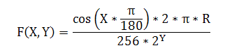
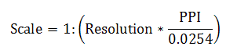
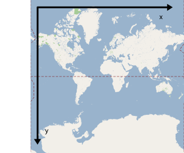
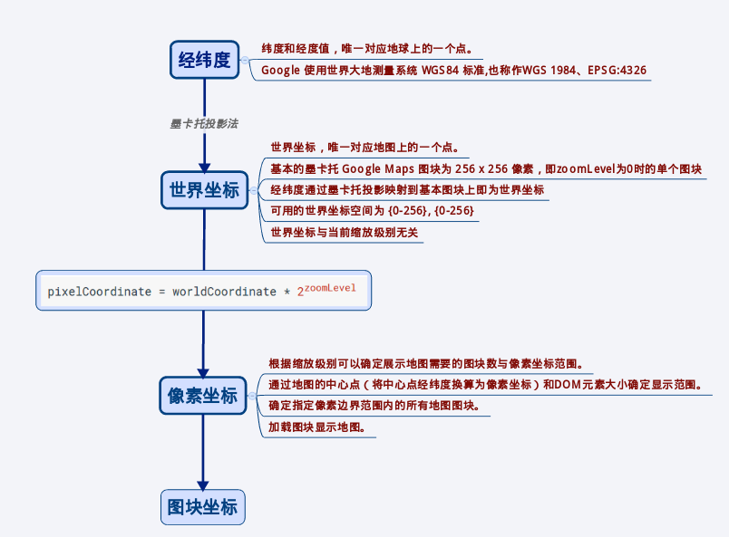
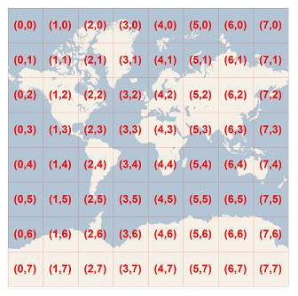
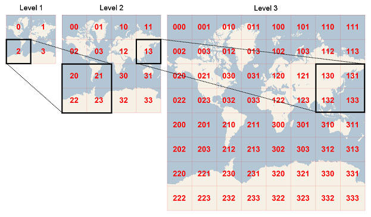
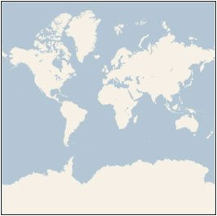

GIS
Resolution and Scale
地理现象和地理要素的表达通常是多尺度的，尺度表示了地物的综合程度和位置精度，衡量尺度的概念一般用分辨率或比例尺。
一、分辨率
在GIS中所提到的分辨率，也称地面分辨率（Ground Resolution）或空间分辨率（Spatial Resolution），
表示一个像素（pixel）代表的地面实际距离。
以谷歌地图为例：在缩放级别为 1 时，图片大小为4个 256*256 的图片，
那么赤道上的空间分辨率为：地球赤道周长（实地距离）除以256*2（像素大小）。
其他纬度上的分辨率则为：纬度圈长度/512。
因此可以看出，分辨率取决于两个参数：纬度和缩放级别。
缩放级别决定了像素的多少，纬度决定了地面距离的长短。
因此谷歌地图某视图下的分辨率计算公式为（单位：米/像素）：
F(X,Y)：地图分辨率；
X：纬度值；
Y：缩放级别；
R：常量 6378137，表示地球半径，单位：米。

二、比例尺
比例尺通常以比率(如 1:10000 )来表示，表示图上距离与实地距离之比。
例如 1:10000 表示图上 1cm 代表实际距离 10000cm，即100米。
由于比例尺起源较早，通常用（纸质）图上的距离衡量实际距离；
而分辨率则通常用设备屏幕上的距离来衡量实际距离。
而同一个地图视图，尺度是唯一的，比例尺和分辨率只不过是两种表示方法，
因此它们是一一对应的。 比例尺与分辨率之间的换算公式如下：
Scale：地图比例尺；
Resolution：地图分辨率；
PPI：每英寸的像素点数。

其中 PPI，即 Pixel per Inch，即每英寸的像素点数（在不混淆情况下，也有用 DPI 来表示该参数）；
0.0254 为英寸和米的转换常数。1英寸(in)=0.0254米(m)
由于比例尺和分辨率一一对应，因此比例尺也取决于纬度和缩放级别两个参数，并且还与 PPI 相关。
仍旧以谷歌地图为例：
当地图处于全幅状态时，上下移动地图，使得地图中心线处纬度发生变化，因此比例尺随之变化；
同理，当地图处于不同的缩放级别时，地图比例尺同样也会发生变化。
Degree / Radian
“弧度”和“度”是度量角大小的两种不同的单位。就像“米”和“市尺”是度量长度大小的两种不同的单位一样。
一、度的定义
两条射线从圆心向圆周射出，形成一个夹角和夹角正对的一段弧。
当这段弧长正好等于圆周长的360分之一时，两条射线的夹角的大小为1度。
二、弧度的定义
两条射线从圆心向圆周射出，形成一个夹角和夹角正对的一段弧。
当这段弧长正好等于圆的半径时，两条射线的夹角大小为1弧度。

三、度跟弧度之间的换算
1弧度＝180°/π （≈57.3°）
1度＝π/180 弧度
Openlayers
地图坐标
Google Maps API 使用以下几种坐标系：
- 纬度和经度值，唯一对应地球上的一个点。（Google 使用世界大地测量系统 WGS84 标准。） （也称作WGS 1984、EPSG:4326）
- 世界坐标，唯一对应地图上的一个点。
- 图块坐标，对应特定缩放级别地图上的特定图块。
世界坐标
每当 Maps API 需要将世界位置转换为地图（屏幕）上的位置时，首先需要将纬度和经度值转换为“世界”坐标。
此转换过程使用地图投影来完成。为此，Google Maps 使用墨卡托投影法
为便于计算像素坐标，我们假定缩放级别为 0 的地图为具有基本图块尺寸的单个图块。
然后，我们在缩放级别 0 定义像素坐标对应的世界坐标，使用投影将纬度和经度转换为此基本图块上的像素位置。
该世界坐标为从地图投影原点到特定位置测量的浮点值。请注意，由于该值为浮点值，
因此，可能比显示的地图图像的当前分辨率更精确。换言之，世界坐标与当前缩放级别无关。
简言之世界坐标是，将经纬度值通过投影算法映射到单个图块上（256 * 256）所得到的浮点值对。
Google Maps 中的世界坐标是以墨卡托投影的原点（即地图西北角，经度为 180 度，纬度约 85 度）为起点测量的，
在 x 方向上朝东（向右）增大，在 y 方向上朝南（向下）增大。由于基本的墨卡托 Google Maps 图块为 256 x 256 像素，
因此，可用的世界坐标空间为 {0-256}, {0-256}

像素坐标
世界坐标反映的是指定投影上的绝对位置，但我们需要将该坐标转换为像素坐标，以确定指定缩放级别的“像素”偏移量
像素坐标采用以下公式进行计算：
pixelCoordinate = worldCoordinate * 2zoomLevel
请注意，根据上述公式，每个增大的缩放级别在 x 和 y 方向上均为原来的两倍大。
因此，缩放级别每增大一级，分辨率为前一个级别的四倍。
例如，在缩放级别 1，地图包含 4 个 256x256 像素图块，因而像素空间为 512x512。
在缩放级别 19，地图上的每个 x 和 y 像素可使用 0 到 256 * 219 之间的值进行引用
由于世界坐标是建立在地图的图块大小基础上的，请注意，对于缩放级别 0，像素坐标等于世界坐标。
因此，像素坐标的整数部分的作用是标识该位置在当前缩放级别下的确切像素。
现在，我们可以在每个缩放级别精确表示地图上的每个位置。
Maps API 在地图中心构造指定缩放级别的视区（如 LatLng），以及包含的 DOM 元素的大小，
并将此边界框转换为像素坐标。然后，API 从逻辑上确定位于指定像素边界内的所有地图图块。
每个地图图块均使用图块坐标进行引用，该坐标大大简化了地图图像的显示。
总结一下：
一、根据缩放级别可以确定展示地图需要的图块数与像素坐标范围。
二、通过Web Map提供的API指定地图的中心点（将中心点经纬度换算为像素坐标）和DOM元素大小确定显示范围。
三、确定指定像素边界范围内的所有地图图块。
四、加载图块显示地图。

图块坐标
为了优化地图系统性能，提高地图下载和显示速度，所有地图都被分割成256 x 256像素大小的正方形小块。
由于在每个放大级别下的像素数量都不一样，因此地图图片（Tile）的数量也不一样：
map width = map height = 2zoomLevel tiles
每个tile都有一个XY坐标值，从左上角的(0, 0)至右下角的(2zoomLevel–1, 2zoomLevel–1)
例如在3级放大级别下，所有tile的坐标值范围为(0, 0)至(7, 7)，如下图：

已知一个像素的XY坐标值时，我们很容易得到这个像素所在的Tile的XY坐标值：
tileX = floor(pixelX / 256)
tileY = floor(pixelY / 256)
为了简化索引和存储地图图片，每个tile的二维XY值被转换成一维字串，即四叉树键值（quardtree key，简称quadkey）。
每个quadkey独立对应某个放大级别下的一个tile，并且它可以被用作数据库中B-tree索引值。
为了将坐标值转换成quadkey，需要将Y和X坐标二进制值交错组合，并转换成4进制值及对应的字符串。
例如，假设在放大级别为3时，tile的XY坐标值为（3，5），quadkey计算如下:
tileX = 3 = 011（二进制）
tileY = 5 = 101（二进制）
quadkey = 100111（二进制） = 213（四进制） = “213”
Quadkey还有其他一些有意思的特性。
第一，quadkey的长度等于该tile所对应的放大级别；
第二，每个tile的quadkey的前几位和其父tile（上一放大级别所对应的tile）的quadkey相同；
下图中，tile 2是tile 20至23的父tile，tile 13是tile130至133的父tile：

最后，quadkey提供的一维索引值通常显示了两个tile在XY坐标系中的相似性。
换句话说，两个相邻的tile对应的quadkey非常接近。这对于优化数据库的性能非常重要，
因为相邻的tile通常被同时请求显示，因此可以将这些tile存放在相同的磁盘区域中，以减少磁盘的读取次数。
实战应用一下，如果大家用过httpWatch的话，可以发现获取必应地图tile的URL如下：
http://r3.tiles.ditu.live.com/tiles/r13023.png?g=47
我们看到其中r13023.png，r表示道路图片，13023就是tile所对应的quadkey。
显然这个tile所在的地图放大级别为5，其祖父tile为上图黑框中130。
投影
为了使地图看起来是无缝（Seamless）的，并且确保来自不同数据源的卫星照片能够完美的拼接，
必须有一个统一的地图映射系统，这就是Google地图所采用的墨卡托映射（Mercator Projection)
通过Mercator Projection，整个地球可以展示为如下平面地图：

尽管Mercator Projection会使地球比例尺和某些区域变形，尤其在两极，它还是有不可磨灭的贡献的：
1、首先它是共形映射（Conformal Projection），即保留了物体的原有形状。
这在展示卫星照片的时候很重要，因为我们所看到的正方形建筑就应该是正方形的，而不是长方形的。
2、其次它是柱状体映射，即南北极在地图的正下、上方，而东西方向处于地图的正右、左。
由于Mercator Projection在两极附近是趋于无限值得，因此它并没完整展现了整个世界，地图上最高纬度是85.05度。
为了简化计算，我们采用球形映射，而不是椭球体形状。虽然采用Mercator Projection只是为了方便展示地图,
需要知道的是，这种映射会给Y轴方向带来0.33%的误差。